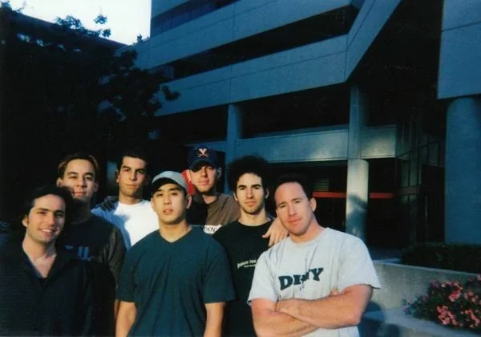
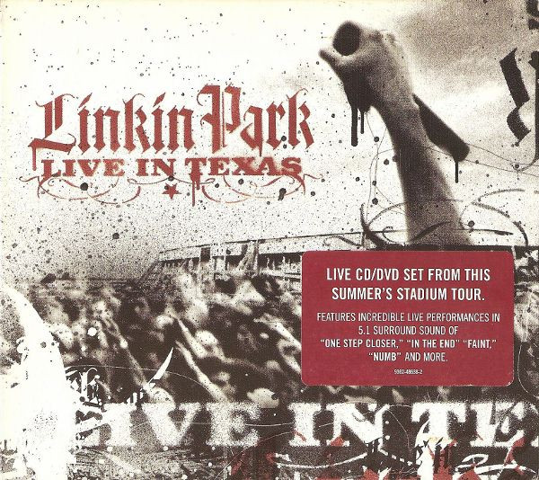
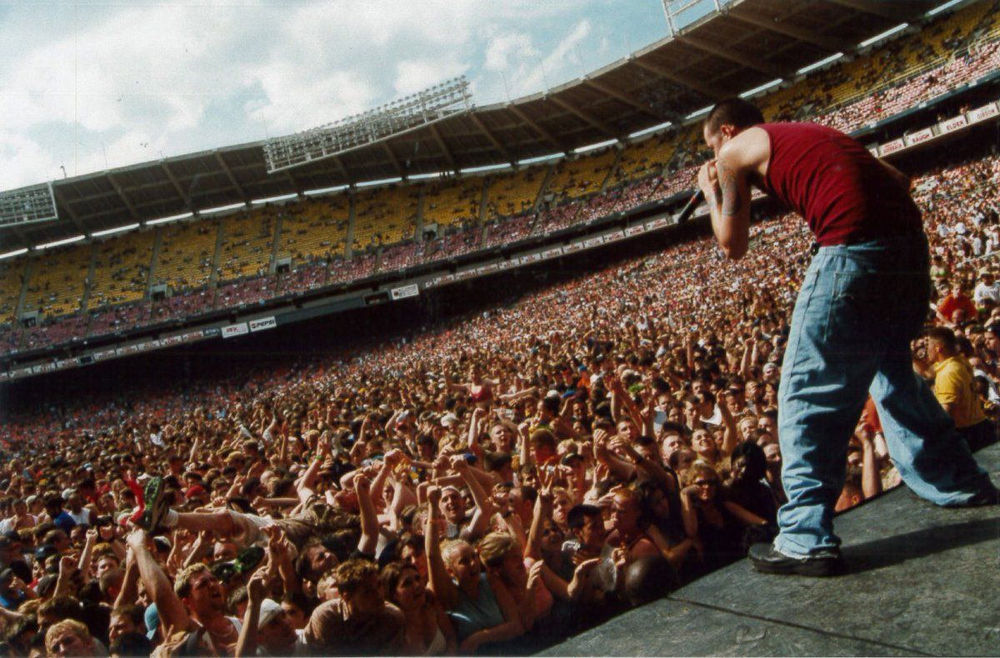

Prima di diventare Linkin Park, abbiamo formato Xero: un gruppo di ragazzi con tanta passione, pochi mezzi e un sogno enorme. Era l'inizio di un viaggio che non immaginavamo ci avrebbe portato così lontano.
- 
TO DO

Nel 1999 eravamo ancora un gruppo che cercava di capire cosa fare della propria vita. Ci chiamavamo Xero (sì, lo sappiamo, non proprio il nome più ispirato di sempre)... scopri di più

Parliamoci chiaro: quando abbiamo iniziato a lavorare su Hybrid Theory, non avevamo idea di cosa stessimo facendo. Sapevamo solo che avevamo un sacco di idee, un budget minuscolo...scopri di più

TO DO
- 
Abbiamo sempre amato suonare dal vivo. C’è qualcosa di magico in quei momenti sul palco: l’adrenalina, il pubblico che canta a squarciagola, la connessione unica che si crea...scopri di più

Il 20 luglio 2017 è stato il giorno più buio della nostra vita. Chester, il nostro amico, fratello, anima e voce, ci ha lasciati. È impossibile descrivere quanto ha significato per noi...scopri di più

Dopo la perdita di Chester, abbiamo passato un periodo difficile, ma ora finalmente siamo pronti per un nuovo inizio con Emily e Colin. Quando ci siamo incontrati per la prima volta...scopri di più
L’arrivo di Chester e il nuovo nome
Nel 1999 eravamo ancora un gruppo che cercava di capire cosa fare della propria vita. Ci chiamavamo Xero (sì, lo sappiamo, non proprio il nome più ispirato di sempre), e la nostra musica aveva un grande potenziale.
Poi è arrivato Chester Bennington. Con la sua voce capace di passare in un attimo da urla potenti a toni dolci e malinconici, Chester ha portato un’energia completamente nuova al gruppo. Ma non è stato un “incontro casuale” in stile film romantico: avevamo mandato demo in lungo e in largo cercando un cantante, e Chester era uno dei pochi che aveva risposto. Non solo: per registrare l’audizione, Chester aveva lasciato un barbecue in pieno svolgimento. Dite quello che volete, ma abbandonare la griglia per un sogno è pura dedizione!
Una volta che Chester si è unito a noi, sapevamo che stavamo per iniziare un nuovo capitolo. E un nuovo capitolo richiedeva un nuovo nome. Dopo aver fatto brainstorming su idee che non vi racconteremo mai (fidatevi, erano terribili), ci siamo ispirati a Lincoln Park, un posto a Santa Monica dove alcuni di noi passavano il tempo. Ovviamente, cambiare "Lincoln" in "Linkin" è stata una mossa obbligata per poter comprare il dominio web. Ah, le priorità di fine anni ’90!
La nascita di Hybrid Theory: sudore, sogni e un pizzico di magia

Parliamoci chiaro: quando abbiamo iniziato a lavorare su Hybrid Theory, non avevamo idea di cosa stessimo facendo. Sapevamo solo che avevamo un sacco di idee, un budget minuscolo e un’enorme voglia di farcela. Eravamo giovani, affamati e determinati a creare qualcosa che nessuno aveva mai sentito prima.
Le sessioni di registrazione? Un mix di entusiasmo e caos totale. Mike passava ore a sperimentare con campionamenti e beat sul suo vecchio computer, mentre Chester metteva ogni briciolo di anima nella voce. Brad e Rob? Instancabili. Ci sono stati momenti in cui pensavamo: “Ragazzi, ma è troppo strano, la gente non capirà mai!” Eppure, ogni volta che riascoltavamo i brani, sentivamo che c’era qualcosa di speciale.
Quando finalmente abbiamo finito l’album e lo abbiamo chiamato Hybrid Theory, non sapevamo davvero cosa aspettarci. Quando è uscito, il 24 ottobre 2000, il nostro mondo è letteralmente esploso. Brani come Crawling, One Step Closer e In the End hanno iniziato a farsi strada nelle radio e nei cuori delle persone. Ogni giorno ricevevamo notizie incredibili: dischi venduti, concerti sold out, fan da ogni angolo del pianeta che cantavano le nostre canzoni come se fossero loro.
Ricordiamo ancora quando abbiamo saputo che Hybrid Theory era diventato uno degli album più venduti del nuovo millennio. Non riuscivamo a crederci. Era come se tutte quelle notti insonni, le discussioni e i momenti di dubbio avessero finalmente avuto un senso.
Nel 2002, abbiamo conquistato il Grammy per la Miglior Performance Hard Rock con Crawling. Ci avete mostrato che la nostra passione e innovazione musicale non passano inosservate.
Il delirio di Live in Texas: quando il palco è diventato casa
Abbiamo sempre amato suonare dal vivo. C’è qualcosa di magico in quei momenti sul palco: l’adrenalina, il pubblico che canta a squarciagola, la connessione unica che si crea. Quindi, nel 2003, durante il nostro tour per Meteora, abbiamo deciso di catturare quell’energia in un album live. E così è nato Live in Texas.
Registrarlo è stato… intenso. Due concerti in Texas, uno a Houston e uno a Irving, con un pubblico scatenato e una produzione gigantesca. Immaginatevi noi che corriamo su e giù per il palco, sudati e carichi di adrenalina, mentre le telecamere catturano ogni singolo momento. Chester che urla come se non ci fosse un domani, Mike che incita la folla, Rob che pesta sulla batteria come un martello pneumatico – insomma, eravamo in modalità "massima potenza".
Quando è arrivato il momento di mettere tutto insieme, abbiamo scelto con cura le tracce migliori, mescolando i nostri successi di Hybrid Theory e Meteora. E poi, perché non farci un regalo extra? Abbiamo incluso un DVD con le immagini del concerto, così chiunque potesse sentirsi parte di quella folla texana impazzita.
Un addio che non dimenticheremo mai: Chester e One More Light Live

Il 20 luglio 2017 è stato il giorno più buio della nostra vita. Chester, il nostro amico, fratello, anima e voce, ci ha lasciati. È impossibile descrivere quanto ha significato per noi, non solo come artista, ma come persona. La sua energia, la sua risata contagiosa, il modo in cui riusciva a trovare sempre la cosa giusta da dire… tutto questo lo rendeva speciale.
La notizia ci ha colpiti come un fulmine. Eravamo devastati, persi. E mentre cercavamo di fare i conti con il vuoto che aveva lasciato, c’era una cosa che continuava a tornare: Chester viveva per la musica. Amava il palco, amava cantare, e soprattutto amava i fan. Sapevamo che il modo migliore per onorarlo era quello di celebrare ciò che lui aveva dato al mondo.
Così è nato One More Light Live. Questo album live è stato registrato durante il nostro tour del 2017, poche settimane prima che Chester ci lasciasse. Ogni canzone, ogni nota, è intrisa della sua passione e del suo cuore. Ascoltarlo è come avere Chester di nuovo accanto a noi, anche solo per un momento.
Chester ci ha lasciati troppo presto, ma il suo spirito vive in ogni canzone, in ogni coro urlato a pieni polmoni, in ogni momento in cui qualcuno trova forza nella sua musica. Non smetteremo mai di amarlo, e non smetteremo mai di ringraziarlo per aver condiviso con noi la sua luce.
Il nuovo capitolo con Emily Armstrong e Colin Brittain

Dopo la perdita di Chester, abbiamo passato un periodo difficile, ma ora finalmente siamo pronti per un nuovo inizio con Emily e Colin.
Quando ci siamo incontrati per la prima volta con Emily, c'è stata subito una connessione speciale. La sua energia, la sua passione e, ovviamente, quella voce che ti travolge come un uragano. E poi c'è Colin Brittain, un produttore e musicista di talento che ha portato una nuova prospettiva e una ventata d'aria fresca alla nostra musica.
Per chi non lo sapesse, Emily è stata la frontwoman dei Dead Sara e ha collaborato con artisti del calibro di Beck e Demi Lovato. Sul palco è una forza della natura: potente, sincera, e con un carisma che cattura l'attenzione di tutti. Non potevamo immaginare un'aggiunta migliore ai Linkin Park. Colin, dal canto suo, ha lavorato con band come Papa Roach e 5 Seconds of Summer, portando la sua esperienza e il suo stile unico nel nostro mondo.
Il nostro ritorno sul palco dopo la pausa di sette anni è stato emozionante. Durante il nostro concerto a Los Angeles, Emily e Colin hanno conquistato il pubblico fin dalla prima nota. Cantare insieme a loro è stato come riscoprire le nostre stesse canzoni. E vi assicuriamo, il meglio deve ancora venire!